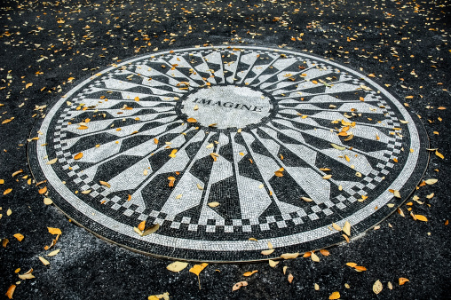

John Lennon

Born in Liverpool, Lennon became involved in the skiffle craze as a teenager. In 1956, he formed the Quarrymen, which evolved into the Beatles in 1960. Sometimes called "the smart Beatle", he was initially the group's de facto leader, a role gradually ceded to McCartney. Through his songwriting in the Beatles, Lennon embraced a myriad of musical influences, initially writing and co-writing rock and pop-oriented hit songs in the band's early years, then later incorporating experimental elements into his compositions in the latter half of the Beatles' career as his songs became known for their increasing innovation. Lennon soon expanded his work into other media by participating in numerous films, including How I Won the War, and authoring In His Own Write and A Spaniard in the Works, both collections of nonsense writings and line drawings. Starting with "All You Need Is Love", his songs were adopted as anthems by the anti-war movement and the larger counterculture of the 1960s. In 1969, he started the Plastic Ono Band with his second wife, the multimedia artist Yoko Ono, held the two-week-long anti-war demonstration Bed-ins for Peace, and left the Beatles to embark on a solo career.
Between 1968 and 1972, Lennon and Ono collaborated on many works, including a trilogy of avant-garde albums, several more films, his solo debut John Lennon/Plastic Ono Band, and the international top-10 singles "Give Peace a Chance", "Instant Karma!", "Imagine" and "Happy Xmas (War Is Over)". Moving to New York City in 1971, his criticism of the Vietnam War resulted in a three-year deportation attempt by the Nixon administration. Lennon and Ono separated from 1973 to 1975, during which time he produced Harry Nilsson's album Pussy Cats. He also had chart-topping collaborations with Elton John ("Whatever Gets You thru the Night") and David Bowie ("Fame"). Following a five-year hiatus, Lennon returned to music in 1980 with the Ono collaboration Double Fantasy. He was murdered by a Beatles fan, Mark David Chapman, three weeks after the album's release.
As a performer, writer or co-writer, Lennon had 25 number-one singles in the Billboard Hot 100 chart. Double Fantasy, his best-selling album, won the 1981 Grammy Award for Album of the Year. In 1982, Lennon won the Brit Award for Outstanding Contribution to Music. In 2002, Lennon was voted eighth in a BBC history poll of the 100 Greatest Britons. Rolling Stone ranked him the fifth-greatest singer and 38th greatest artist of all time. He was inducted into the Songwriters Hall of Fame (in 1997) and the Rock and Roll Hall of Fame (twice, as a member of the Beatles in 1988 and as a solo artist in 1994).
Early life

Lennon was born on 9 October 1940 at Liverpool Maternity Hospital to Julia (née Stanley) (1914–1958) and Alfred Lennon (1912–1976). Alfred was a merchant seaman of Irish descent who was away at the time of his son's birth.[3] His parents named him John Winston Lennon after his paternal grandfather, John "Jack" Lennon, and Prime Minister Winston Churchill.[4] His father was often away from home but sent regular pay cheques to 9 Newcastle Road, Liverpool, where Lennon lived with his mother;[5] the cheques stopped when he went absent without leave in February 1944.[6][7] When he eventually came home six months later, he offered to look after the family, but Julia, by then pregnant with another man's child, rejected the idea.[8] After her sister Mimi complained to Liverpool's Social Services twice, Julia gave her custody of Lennon.
In July 1946, Lennon's father visited her and took his son to Blackpool, secretly intending to emigrate to New Zealand with him.[9] Julia followed them – with her partner at the time, Bobby Dykins – and after a heated argument, his father forced the five-year-old to choose between them. In one account of this incident, Lennon twice chose his father, but as his mother walked away, he began to cry and followed her.[10] According to author Mark Lewisohn, however, Lennon's parents agreed that Julia should take him and give him a home. Billy Hall, who witnessed the incident, has said that the dramatic portrayal of a young John Lennon being forced to make a decision between his parents is inaccurate.[11] Lennon had no further contact with Alf for close to 20 years.
Throughout the rest of his childhood and adolescence, Lennon lived at Mendips, 251 Menlove Avenue, Woolton, with Mimi and her husband George Toogood Smith, who had no children of their own.[13] His aunt purchased volumes of short stories for him, and his uncle, a dairyman at his family's farm, bought him a mouth organ and engaged him in solving crossword puzzles.[14] Julia visited Mendips on a regular basis, and John often visited her at 1 Blomfield Road, Liverpool, where she played him Elvis Presley records, taught him the banjo, and showed him how to play "Ain't That a Shame" by Fats Domino.
He regularly visited his cousin Stanley Parkes, who lived in Fleetwood and took him on trips to local cinemas.[17] During the school holidays Parkes often visited Lennon with Leila Harvey, another cousin, and the three often travelled to Blackpool two or three times a week to watch shows. They would visit the Blackpool Tower Circus and see artists such as Dickie Valentine, Arthur Askey, Max Bygraves and Joe Loss, with Parkes recalling that Lennon particularly liked George Formby.[18] After Parkes's family moved to Scotland, the three cousins often spent their school holidays together there. Parkes recalled, "John, cousin Leila and I were very close. From Edinburgh we would drive up to the family croft at Durness, which was from about the time John was nine years old until he was about 16."[19] Lennon's uncle George died of a liver haemorrhage on 5 June 1955, aged 52.
Lennon was raised as an Anglican and attended Dovedale Primary School.[21] After passing his eleven-plus exam, he attended Quarry Bank High School in Liverpool from September 1952 to 1957, and was described by Harvey at the time as a "happy-go-lucky, good-humoured, easy going, lively lad".[22] However, he was also known to frequently engage in fights, bully and disrupt classes.[23] Despite this, he quickly built a reputation as the class clown[24] and often drew comical cartoons that appeared in his self-made school magazine, the Daily Howl.
In 1956, Julia bought John his first guitar. The instrument was an inexpensive Gallotone Champion acoustic for which she lent her son five pounds and ten shillings on the condition that the guitar be delivered to her own house and not Mimi's, knowing well that her sister was not supportive of her son's musical aspirations.[27] Mimi was sceptical of his claim that he would be famous one day, and she hoped that he would grow bored with music, often telling him, "The guitar's all very well, John, but you'll never make a living out of it.
On 15 July 1958, Julia Lennon was struck and killed by a car while she was walking home after visiting the Smiths' house.[29] His mother's death traumatised the teenage Lennon, who, for the next two years, drank heavily and frequently got into fights, consumed by a "blind rage".[30] Julia's memory would later serve as a major creative inspiration for Lennon, inspiring songs such as the 1968 Beatles song "Julia".
Lennon's senior school years were marked by a shift in his behaviour. Teachers at Quarry Bank High School described him thus: "He has too many wrong ambitions and his energy is often misplaced", and "His work always lacks effort. He is content to 'drift' instead of using his abilities."[32] Lennon's misbehaviour created a rift in his relationship with his aunt.
Lennon failed his O-level examinations, and was accepted into the Liverpool College of Art after his aunt and headmaster intervened.[33] At the college he began to wear Teddy Boy clothes and was threatened with expulsion for his behaviour.[34] In the description of Cynthia Powell, Lennon's fellow student and subsequently his wife, he was "thrown out of the college before his final year".
1957–1960: The Quarrymen
In the mid-1950s, there was a revival in the United Kingdom of the musical form "skiffle" that had originated in the United States and had been popular in the US in the 1920s, '30s and '40s. In addition to its popularity among British teenagers as music to listen to, it also spawned a craze of teenage boys starting their own groups to perform the music. One of the primary attractions was that it did not require great musical skills or expensive instruments to be played.[3] Early British skiffle was played by traditional jazz musicians, with the most successful British proponent of the genre in the 1950s being Lonnie Donegan.[4] The Quarrymen's initial repertoire included several songs that Donegan had recorded.[5] When Lennon wanted to try making music himself, he and fellow Quarry Bank school friend, Griffiths, took guitar lessons in Hunt's Cross, Liverpool, although Lennon gave up the lessons soon after, as they were based on theory and not actual playing.
As Griffiths already knew how to play the banjo, Lennon's mother showed them how to tune the top four strings of their guitars to the same notes as a banjo, and taught them the chords of D, C, and D7, as well as the Fats Domino song, "Ain't That a Shame".[6][7] They practised at Lennon's aunt's house (called Mendips) at 251 Menlove Avenue where Lennon lived, or at Griffiths' house in Halewood Drive.[8] They learned how to play "Rock Island Line", "Jump Down Turn Around (Pick a Bale of Cotton)", "Alabamy Bound" and "Cumberland Gap", and later learned how to play "That's All Right" and "Mean Woman Blues".
Lennon and Griffiths decided to form a skiffle group in November 1956.[10] This initial line-up consisted of Lennon and Griffiths on guitars, Pete Shotton on washboard, and school friend Bill Smith on tea chest bass.[11][12] The group, initially called the Blackjacks, quickly changed their name to the Quarrymen. Both Lennon and Shotton have been credited with coining the name Quarrymen after a line in their school's song: 'Quarrymen, old before our birth. Straining each muscle and sinew.' The choice of name was tongue-in-cheek as Lennon regarded the reference in the school song to "straining each muscle and sinew" as risible.[5][13] Smith's tenure in the band was extremely short, and he was replaced in quick succession by Nigel Walley, Ivan Vaughan, and Len Garry throughout late 1956 and early 1957.[14] Also during this period, drummer Colin Hanton and banjo player Rod Davis joined the group.[14] This group of Lennon, Griffiths, Shotton, Garry, Hanton, and Davis formed the first stable line-up of the group.
In July 1957, Canadian impresario Carroll Levis held a talent contest in Liverpool, the winners of which would appear on the television series Star Search.[21] The Quarrymen played "Worried Man Blues", and were loudly applauded, but a group from Wales (called the Sunnyside Skiffle Group) "jumped all over the stage" and outshone the static Quarrymen, and were asked by Levis to fill in the last few minutes of the contest with a second song.[22] Lennon argued heatedly with Levis backstage, saying the Sunnyside Skiffle Group had brought a bus full of supporters with them, and were given "the upper hand" advantage by Levis.[22] After the competition, Levis used a clap-o-meter (a machine to measure the decibels of the audience's reaction to the groups) as they were asked to walk back out onto the stage. The Quarrymen and the Sunnyside Skiffle Group tied by both reaching ninety on the meter, but after a second test, the Quarrymen lost by a small margin.
1960–1970: The Beatles

Brian Epstein managed the Beatles from 1962 until his death in 1967. He had no previous experience managing artists, but he had a strong influence on the group's dress code and attitude on stage.[51] Lennon initially resisted his attempts to encourage the band to present a professional appearance, but eventually complied, saying "I'll wear a bloody balloon if somebody's going to pay me."[52] McCartney took over on bass after Sutcliffe decided to stay in Hamburg, and Best was replaced with drummer Ringo Starr; this completed the four-piece line-up that would remain until the group's break-up in 1970. The band's first single, "Love Me Do", was released in October 1962 and reached No. 17 on the British charts. They recorded their debut album, Please Please Me, in under 10 hours on 11 February 1963,[53] a day when Lennon was suffering the effects of a cold,[54] which is evident in the vocal on the last song to be recorded that day, "Twist and Shout".[55] The Lennon–McCartney songwriting partnership yielded eight of its fourteen tracks. With a few exceptions, one being the album title itself, Lennon had yet to bring his love of wordplay to bear on his song lyrics, saying: "We were just writing songs ... pop songs with no more thought of them than that – to create a sound. And the words were almost irrelevant".[53] In a 1987 interview, McCartney said that the other Beatles idolised Lennon: "He was like our own little Elvis ... We all looked up to John. He was older and he was very much the leader; he was the quickest wit and the smartest.
The Beatles achieved mainstream success in the UK early in 1963. Lennon was on tour when his first son, Julian, was born in April. During their Royal Variety Show performance, which was attended by the Queen Mother and other British royalty, Lennon poked fun at the audience: "For our next song, I'd like to ask for your help. For the people in the cheaper seats, clap your hands ... and the rest of you, if you'll just rattle your jewellery."[57] After a year of Beatlemania in the UK, the group's historic February 1964 US debut appearance on The Ed Sullivan Show marked their breakthrough to international stardom. A two-year period of constant touring, filmmaking, and songwriting followed, during which Lennon wrote two books, In His Own Write and A Spaniard in the Works.[58] The Beatles received recognition from the British establishment when they were appointed Members of the Order of the British Empire (MBE) in the 1965 Queen's Birthday Honours.
ennon grew concerned that fans who attended Beatles concerts were unable to hear the music above the screaming of fans, and that the band's musicianship was beginning to suffer as a result.[60] Lennon's "Help!" expressed his own feelings in 1965: "I meant it ... It was me singing 'help'".[61] He had put on weight (he would later refer to this as his "Fat Elvis" period),[62] and felt he was subconsciously seeking change.[63] In March that year he and Harrison were unknowingly introduced to LSD when a dentist, hosting a dinner party attended by the two musicians and their wives, spiked the guests' coffee with the drug.[64] When they wanted to leave, their host revealed what they had taken, and strongly advised them not to leave the house because of the likely effects. Later, in a lift at a nightclub, they all believed it was on fire; Lennon recalled: "We were all screaming ... hot and hysterical."[65] In March 1966, during an interview with Evening Standard reporter Maureen Cleave, Lennon remarked, "Christianity will go. It will vanish and shrink ... We're more popular than Jesus now – I don't know which will go first, rock and roll or Christianity."[66] The comment went virtually unnoticed in England but caused great offence in the US when quoted by a magazine there five months later. The furore that followed, which included the burning of Beatles records, Ku Klux Klan activity and threats against Lennon, contributed to the band's decision to stop touring.
After the band's final concert on 29 August 1966, Lennon filmed the anti-war black comedy How I Won the War – his only appearance in a non-Beatles feature film – before rejoining his bandmates for an extended period of recording, beginning in November.[68] Lennon had increased his use of LSD[69] and, according to author Ian MacDonald, his continuous use of the drug in 1967 brought him "close to erasing his identity".[70] The year 1967 saw the release of "Strawberry Fields Forever", hailed by Time magazine for its "astonishing inventiveness",[71] and the group's landmark album Sgt. Pepper's Lonely Hearts Club Band, which revealed lyrics by Lennon that contrasted strongly with the simple love songs of the group's early years.
In late June, the Beatles performed Lennon's "All You Need Is Love" as Britain's contribution to the Our World satellite broadcast, before an international audience estimated at up to 400 million.[73] Intentionally simplistic in its message,[74] the song formalised his pacifist stance and provided an anthem for the Summer of Love.[75] After the Beatles were introduced to the Maharishi Mahesh Yogi, the group attended an August weekend of personal instruction at his Transcendental Meditation seminar in Bangor, Wales.[76] During the seminar, they were informed of Epstein's death. "I knew we were in trouble then", Lennon said later. "I didn't have any misconceptions about our ability to do anything other than play music. I was scared – I thought, 'We've fucking had it now.'"[77] McCartney organised the group's first post-Epstein project,[78] the self-written, -produced and -directed television film Magical Mystery Tour, which was released in December that year. While the film itself proved to be their first critical flop, its soundtrack release, featuring Lennon's Lewis Carroll-inspired "I Am the Walrus", was a success.
Led by Harrison and Lennon's interest, the Beatles travelled to the Maharishi's ashram in India in February 1968 for further guidance.[81] While there, they composed most of the songs for their double album The Beatles,[82] but the band members' mixed experience with Transcendental Meditation signalled a sharp divergence in the group's camaraderie.[83] On their return to London, they became increasingly involved in business activities with the formation of Apple Corps, a multimedia corporation composed of Apple Records and several other subsidiary companies. Lennon described the venture as an attempt to achieve "artistic freedom within a business structure".[84] Released amid the Protests of 1968, the band's debut single for the Apple label included Lennon's B-side "Revolution", in which he called for a "plan" rather than committing to Maoist revolution. The song's pacifist message led to ridicule from political radicals in the New Left press.[85] Adding to the tensions at the Beatles' recording sessions that year, Lennon insisted on having his new girlfriend, the Japanese artist Yoko Ono, beside him, thereby contravening the band's policy regarding wives and girlfriends in the studio. He was especially pleased with his songwriting contributions to the double album and identified it as a superior work to Sgt. Pepper.[86] At the end of 1968, Lennon participated in The Rolling Stones Rock and Roll Circus, a television special that was not broadcast. Lennon performed with the Dirty Mac, a supergroup composed of Lennon, Eric Clapton, Keith Richards and Mitch Mitchell. The group also backed a vocal performance by Ono. A film version was released in 1996.
By late 1968, Lennon's increased drug use and growing preoccupation with Ono, combined with the Beatles' inability to agree on how the company should be run, left Apple in need of professional management. Lennon asked Lord Beeching to take on the role but he declined, advising Lennon to go back to making records. Lennon was approached by Allen Klein, who had managed the Rolling Stones and other bands during the British Invasion. In early 1969, Klein was appointed as Apple's chief executive by Lennon, Harrison and Starr[88] but McCartney never signed the management contract.
Lennon and Ono were married on 20 March 1969 and soon released a series of 14 lithographs called "Bag One" depicting scenes from their honeymoon,[90] eight of which were deemed indecent and most of which were banned and confiscated.[91] Lennon's creative focus continued to move beyond the Beatles, and between 1968 and 1969 he and Ono recorded three albums of experimental music together: Unfinished Music No. 1: Two Virgins[92] (known more for its cover than for its music), Unfinished Music No. 2: Life with the Lions and Wedding Album. In 1969, they formed the Plastic Ono Band, releasing Live Peace in Toronto 1969. Between 1969 and 1970, Lennon released the singles "Give Peace a Chance", which was widely adopted as an anti-Vietnam War anthem,[93] "Cold Turkey", which documented his withdrawal symptoms after he became addicted to heroin,[94] and "Instant Karma!".
n protest at Britain's involvement in "the Nigeria-Biafra thing"[96] (namely, the Nigerian Civil War),[97] its support of America in the Vietnam War and (perhaps jokingly) against "Cold Turkey" slipping down the charts,[98] Lennon returned his MBE medal to the Queen. This gesture had no effect on his MBE status, which could not be renounced.[99] The medal, together with Lennon's letter, is held at the Central Chancery of the Orders of Knighthood.
Lennon left the Beatles in September 1969,[101] but agreed not to inform the media while the group renegotiated their recording contract. He was outraged that McCartney publicised his own departure on releasing his debut solo album in April 1970. Lennon's reaction was, "Jesus Christ! He gets all the credit for it!"[102] He later wrote, "I started the band. I disbanded it. It's as simple as that."[103] In a December 1970 interview with Jann Wenner of Rolling Stone magazine, he revealed his bitterness towards McCartney, saying, "I was a fool not to do what Paul did, which was use it to sell a record."[104] Lennon also spoke of the hostility he perceived the other members had towards Ono, and of how he, Harrison and Starr "got fed up with being sidemen for Paul ... After Brian Epstein died we collapsed. Paul took over and supposedly led us. But what is leading us when we went round in circles?
Solo career: 1970–1980
Between 1 April and 15 September 1970, Lennon and Ono went through primal therapy with Arthur Janov at Tittenhurst, in London and at Janov's clinic in Los Angeles, California. Designed to release emotional pain from early childhood, the therapy entailed two half-days a week with Janov for six months; he had wanted to treat the couple for longer, but their American visa ran out and they had to return to the UK.[107] Lennon's debut solo album, John Lennon/Plastic Ono Band (1970), was received with praise by many music critics, but its highly personal lyrics and stark sound limited its commercial performance.[108] The album featured the song "Mother", in which Lennon confronted his feelings of childhood rejection,[109] and the Dylanesque "Working Class Hero", a bitter attack against the bourgeois social system which, due to the lyric "you're still fucking peasants", fell foul of broadcasters.
Eager for a major commercial success, Lennon adopted a more accessible sound for his next album, Imagine (1971).[116] Rolling Stone reported that "it contains a substantial portion of good music" but warned of the possibility that "his posturings will soon seem not merely dull but irrelevant".[117] The album's title track later became an anthem for anti-war movements,[118] while the song "How Do You Sleep?" was a musical attack on McCartney in response to lyrics on Ram that Lennon felt, and McCartney later confirmed,[119] were directed at him and Ono.[120][nb 3] In "Jealous Guy", Lennon addressed his demeaning treatment of women, acknowledging that his past behaviour was the result of long-held insecurity.
In gratitude for his guitar contributions to Imagine, Lennon initially agreed to perform at Harrison's Concert for Bangladesh benefit shows in New York.[123] Harrison refused to allow Ono to participate at the concerts, however, which resulted in the couple having a heated argument and Lennon pulling out of the event.
ennon and Ono moved to New York in August 1971 and immediately embraced US radical left politics. The couple released their "Happy Xmas (War Is Over)" single in December.[125] During the new year, the Nixon administration took what it called a "strategic counter-measure" against Lennon's anti-war and anti-Nixon propaganda. The administration embarked on what would be a four-year attempt to deport him.[126][127] Lennon was embroiled in a continuing legal battle with the immigration authorities, and he was denied permanent residency in the US; the issue would not be resolved until 1976.
Some Time in New York City was recorded as a collaboration with Ono and was released in 1972 with backing from the New York band Elephant's Memory. A double LP, it contained songs about women's rights, race relations, Britain's role in Northern Ireland and Lennon's difficulties in obtaining a green card.[129] The album was a commercial failure and was maligned by critics, who found its political sloganeering heavy-handed and relentless.[130] The NME's review took the form of an open letter in which Tony Tyler derided Lennon as a "pathetic, ageing revolutionary".[131] In the US, "Woman Is the Nigger of the World" was released as a single from the album and was televised on 11 May, on The Dick Cavett Show.
As Lennon was about to record Mind Games in 1973, he and Ono decided to separate. The ensuing 18-month period apart, which he later called his "lost weekend" in reference to the film of the same name,[136][137] was spent in Los Angeles and New York City in the company of May Pang.[138] Mind Games, credited to the "Plastic U.F.Ono Band", was released in November 1973. Lennon also contributed "I'm the Greatest" to Starr's album Ringo (1973), released the same month. With Harrison joining Starr and Lennon at the recording session for the song, it marked the only occasion when three former Beatles recorded together between the band's break-up and Lennon's death.
Sean was Lennon's only child with Ono. Sean was born on 9 October 1975 (Lennon's thirty-fifth birthday), and John took on the role of househusband. Lennon began what would be a five-year hiatus from the music industry, during which time, he later said, he "baked bread" and "looked after the baby".[154] He devoted himself to Sean, rising at 6 am daily to plan and prepare his meals and to spend time with him.[155] He wrote "Cookin' (In the Kitchen of Love)" for Starr's Ringo's Rotogravure (1976), performing on the track in June in what would be his last recording session until 1980.[156] He formally announced his break from music in Tokyo in 1977, saying, "we have basically decided, without any great decision, to be with our baby as much as we can until we feel we can take time off to indulge ourselves in creating things outside of the family."[157] During his career break he created several series of drawings, and drafted a book containing a mix of autobiographical material and what he termed "mad stuff",[158] all of which would be published posthumously.
Lennon emerged from his hiatus in October 1980, when he released the single "(Just Like) Starting Over". In November, he and Ono released the album Double Fantasy, which included songs Lennon had written in Bermuda. In June, Lennon chartered a 43-foot sailboat and embarked on a sailing trip to Bermuda. En route, he and the crew encountered a storm, rendering everyone on board seasick, except Lennon, who took control and sailed the boat through the storm. This experience re-invigorated him and his creative muse. He spent three weeks in Bermuda in a home called Fairylands writing and refining the tracks for the upcoming album.
Murder: 8 December 1980
At approximately 5:00 p.m. on 8 December 1980, Lennon autographed a copy of Double Fantasy for Mark David Chapman before leaving The Dakota with Ono for a recording session at the Record Plant.[166] After the session, Lennon and Ono returned to the Dakota in a limousine at around 10:50 p.m. (EST). They left the vehicle and walked through the archway of the building. Chapman then shot Lennon twice in the back and twice in the shoulder[167] at close range. Lennon was rushed in a police cruiser to the emergency room of Roosevelt Hospital, where he was pronounced dead on arrival at 11:15 p.m. (EST).
Ono issued a statement the next day, saying "There is no funeral for John", ending it with the words, "John loved and prayed for the human race. Please do the same for him."[170] His remains were cremated at Ferncliff Cemetery in Hartsdale, New York. Ono scattered his ashes in New York's Central Park, where the Strawberry Fields memorial was later created.[171] Chapman avoided going to trial when he ignored his lawyer's advice and pleaded guilty to second-degree murder and was sentenced to 20-years-to-life.
In the weeks following the murder, "(Just Like) Starting Over" and Double Fantasy topped the charts in the UK and the US.[174] "Imagine" hit number one in the UK in January 1981 and "Happy Xmas" peaked at number two.[175] "Imagine" was succeeded at the top of the UK chart by "Woman", the second single from Double Fantasy.[176] Later that year, Roxy Music's cover version of "Jealous Guy", recorded as a tribute to Lennon, was also a UK number-one.